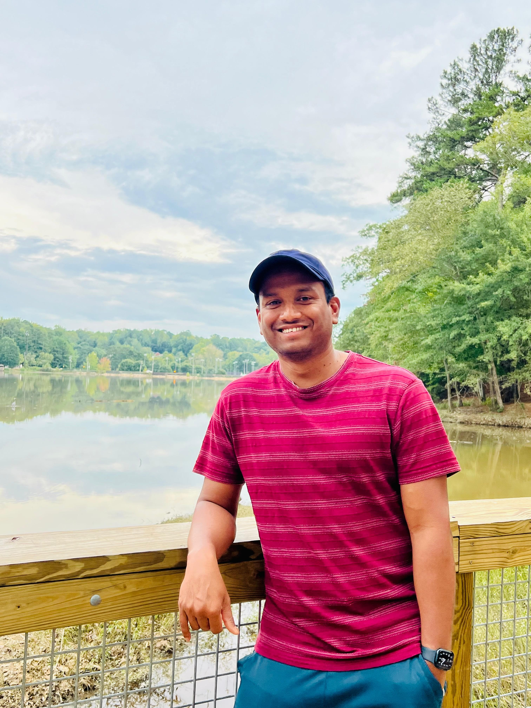

🚨 New Paper Published! 🚨 For more details on my latest paper, click here!

Welcome to my Research Website
- I am a Research Engineer at the Georgia Institute of Technology, where I specialize in the first-principles modeling of materials. My research focuses on understanding and predicting the behavior of materials at the micro- and nanoscale using advanced computational methods, including density functional theory (DFT), molecular dynamics (MD), spin-lattice dynamics (SLD), and non-equilibrium Green’s function (NEGF) simulations. With a Ph.D. in Physics, I aim to contribute to developing next-generation materials for sustainable energy applications through accurate, multiscale simulations.
- Over the years, I have worked on modeling multifunctional materials, developing advanced computational techniques, and training machine learning potentials for complex materials systems. I am deeply passionate about bridging fundamental research with real-world applications, and I strive to contribute to the discovery, design, and optimization of novel materials that enable next-generation, energy-efficient technologies. My work aims to accelerate materials innovation for a more sustainable and technologically advanced future.
Professional Skills
- Languages : Strong reading, writing, and speaking competencies in English, Hindi, and Odia (Native language)..
- Simulation : Density Functional Theory (DFT), ab initio and classical molecular dynamics (MD), spin-lattice dynamics (SLD), Monte Carlo, Non-Equilibrium Green Function (NEGF) simulations
- Research : Solving complex lattice and magnetic structures, electronic, optical, thermal, mechanical, and magneto-electric/caloric/optical properties, orbital ordering, spontaneous electrical polarization.
- Programming : C, C++, FORTRAN, Python
- Codes : VASP, WIEN2K, CRYSTAL17, Quantum Espresso, CALYPSO, LAMMPS, VAMPIRE, UppASD, SPR-KKR, QuantumATK.
- Analysis : VESTA, Xmgrace, Origin, p4vasp, OVITO, Phonopy, XCrySDen, VMD
- Misc. : Academic research, collaborative research, teaching, training, consultation, LATEX typesetting, and publishing.
Education
- 2013 – 2019 : Ph.D. in Physics, Central University of Tamil Nadu, India Area: Condensed Matter Physics (Computational). Thesis title: First Principles Modeling of Multiferroics with Giant Magnetoelectric Coupling.
- 2011 – 2013 : M.Sc. in Physics, Pondicherry University, India, Specialization: Condensed Matter Physics (Experimental) Thesis title: Magnetic and Dielectric Properties of Co1.75Fe1.25O4 Spinel Ferrite Prepared by Co-Precipitation Method.
- 2008 – 2011 : B.Sc. in Physics, Ravenshaw University, India
Curriculum Vitae
Download my CV